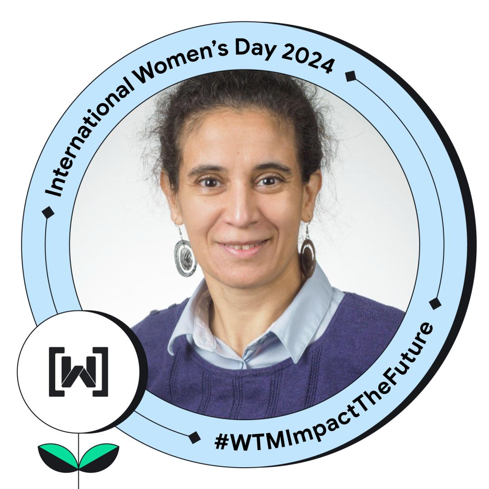

| Home | Registration | Program | Speaker | Directions |
Women Techmakers is a program created by Google to celebrate International Women’s Day and to highlight the talent of women in technology. This program has been in over 200 global events and seen across 52 countries.
International Women’s Day (IWD)s is marked on March 8th every year. In different regions, the focus of celebrations ranges from general respect and appreciation toward women to a celebration of women’s economic, political, and social achievements.
|  |
Nadia Tahiri With her M.Sc. and Ph.D. degrees in Computer Science from the University of Quebec at Montreal, Canada, she has established herself as a thought expert in phylogenetic tree construction, clustering and classification, computational biology, and consensus tree construction. As an assistant professor at the Department of Computer Science at the University of Sherbrooke, Nadia has had the opportunity to continue her research in a dynamic and innovative environment. She is widely recognized for her expertise in supertree construction, which is a key tool in evolutionary biology for understanding the relationships between species. |
|
|
Nadia Tahiri With her M.Sc. and Ph.D. degrees in Computer Science from the University of Quebec at Montreal, Canada, she has established herself as a thought expert in phylogenetic tree construction, clustering and classification, computational biology, and consensus tree construction. As an assistant professor at the Department of Computer Science at the University of Sherbrooke, Nadia has had the opportunity to continue her research in a dynamic and innovative environment. She is widely recognized for her expertise in supertree construction, which is a key tool in evolutionary biology for understanding the relationships between species. |
||